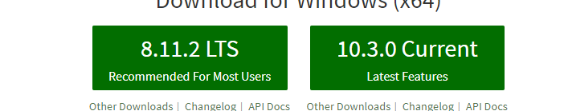

学习目标
1.1、什么是node？
1.2、为什么要学习node
1. 3、node版本常识
1. 4、开发环境的搭建
1.5、模块、包与commonjs
2.1 搭建nodejs开发环境
2.2 复习课堂知识及其案例
3.1npm使用入门
3.2yarn使用入门
4.1 复习巩固npm
5.1复习巩固yarn
6、复习及其扩展模块
课程大纲及其笔记
1.1什么是node？
Node.js 是一个基于 Chrome V8 引擎的 JavaScript 运行环境。
Node.js底层是由C++语言编写
Node.js 使用了一个事件驱动、非阻塞式 I/O 的模型，使其轻量又高效。
Node.js 的包管理器 npm，成为世界上最大的开放源代码的生态系统
Node.js 可以解析JS代码（没有浏览器安全级别的限制（同源策略））提供很多系统级别的API，如：
文件的读写
进程的管理 （进程/线程）
网络通信 （http/https,TCP/UDP,网络传输协议）
......
如果想要使用国内的淘宝镜像http://npm.taobao.org/，可以运行命令：
npm install -g cnpm --registry=https://registry.npm.taobao.org
中午12:00左右（11:40-12:20）cnpm装模块会装不全
1.2、为什么要学习node
列举一些基于Node的工具或者框架
Node-Webkit：基于node的webkit的内核
NodeOS：基于node的操作系统
Express、koa：基于node的框架
Jade：模板
EJS：模板
Forever：负载均衡
PM2：负载均衡
Log.io：浏览器打印各种输出日志，报错等
Grunt、Gulp、Webpack：前端工程化工具
Mocha、Karma：前端测试工具
学习nodejs的网站
r;'/
1.3、node版本常识
打开官网 https://nodejs.org/en/，选择版本下载（右侧表示最新的，左侧是推荐的）

偶数位为稳定版本：v6.8.x v6.6.x v6.4.x
基数位为非稳定版本：v6.9.x v6.7.x v6.5.x
1.4 开发环境的搭建
var http = require('http');
http.createServer( function ( request, response ) {
response.writeHead(200, {
"Content-Type": "text/html;charset=utf-8"
})
response.write("<h1>Hello World!</h1>");
response.write("<h1>您好，世界</h1>");
response.end();
} ).listen(3000);
1.5、模块、包与commonjs
node的模块： 原生模块、 第三方模块、 自定义模块
原生模块：http/https/fs/events/url/querystring.... ----- node安装之后自带的模块
第三方模块：md5(加密方式).... ----- 需要安装的模块，类似于gulp
自定义模块：自己定义的模块
自定义模块如何使用：
定义模块、暴露模块、需要时引入模块、使用模块 ---- 矿泉水的故事
commonjs：编程规范---模块化开发 ---- （模块化开发其他规范：AMD规范（require.js）/CMD规范(sea.js)）
前端使用--webpack
后端使用--node
1.6 服务器设置
/**
* 同源策略
协议 http
域名 www.***.com localhost 127.0.0.1
端口 3000 自行设定
*/
//http模块属于node的原生模块
//node的模块： 原生模块、 第三方模块、 自定义模块
//require('http') 基于commonJs规范的模块化开发的方法
var http = require('http');
//服务器内部设置
/**
*
req --- request ---- 用来接收发送过来的数据
res --- response ---- 返回的数据
*/
var fn = function ( req, res ) {
//设置返回状态码以及返回头信息
res.writeHead( 200, {
"Content-Type": "text/html;charset=utf-8;" // text/plain --- 不解析HTML标签，直接输出
});
//給前端输出信息
res.write('<h1>Hello World！</h1>');
//表明此次请求结束
res.end();
};
//创建服务器
var server = http.createServer(fn);
//监听端口
server.listen(3000);
//提示用户地址
2 自己复习
3.1npm使用入门
npm 由三个独立的部分组成：
* 网站 ----- 开发者查找包（package）、设置参数以及管理 npm 使用体验的主要途径
* 注册表（registry） ----- 个巨大的数据库，保存了每个包（package）的信息
* 命令行工具 (CLI) ----- 通过命令行或终端运行。开发者通过 CLI 与 npm 打交道
2、更新npm
npm install npm@latest -g （npm@latest最新版本，也可以写指定版本例npm@2.1.1）
3、安装包--安装模块
npm install <packageName> 临时安装模块packageName
npm install <packageName> --global (-g) 全局安装模块packageName，任何目录下都可以访问（往系统注册了命令---全局安装的路径：C:\Users\asus\AppData\Roaming\npm）
npm install <packageName> --save （-S） 安装模块到项目依赖 ---- 项目上线需要的模块
npm install <packageName> --save-dev （-D） 安装模块到开发依赖 ---- 开发时模块，测试模块
npm install <packageName>@*** -D 指定版本安装某一个模块packageName
4、卸载
npm uninstall <packageName>
测试：黑盒测试、白盒测试

3.2yarn使用入门
1、下载安装
2、命令安装 cnpm/npm i Chocolatey -g
choco i yarn
使用：
添加一个依赖包
yarn add [package]
yarn add [package]@[version]
yarn add [package]@[tag]
更新一个依赖包
yarn upgrade [package]
yarn upgrade [package]@[version]
yarn upgrade [package]@[tag]
删除一个依赖包
yarn remove [package]
安装所有的依赖包
yarn
or
yarn install
4 自己复习
5 自己复习
6、复习及其扩展模块
1、CSS3 优雅降级、渐进增强
2、HTTP/HTTPS
3、TCP/UDP网络传输协议
4、线程、进程
5、黑盒测试和白盒测试
6、前端工程化工具 gulp、webpack
7、模块化开发：AMD/CMD----commonjs规范的区别
day02学习目标
1.1 nodejsAPI（url、querysting、http、events、fs、stream）
2.1复习课堂知识
3.1nodejsAPI（http小爬虫、request方法）
3.2 nodejs基础应用（路由、参数接受，async、npm scripts）
4.1理解复习第三节课的知识
5.1应用http模块编写一个爬虫小工具
5.2 后端表单的提交